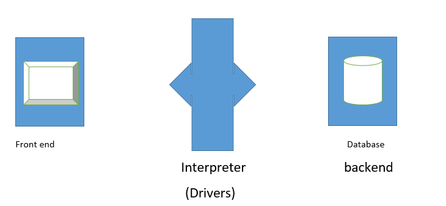
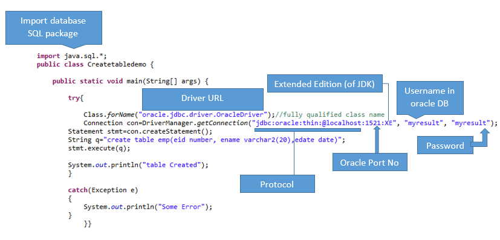
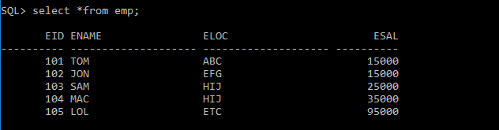
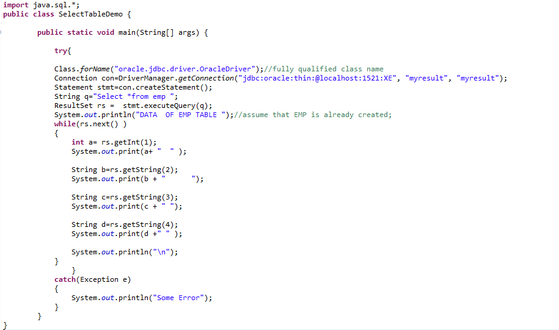
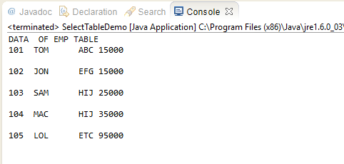

Java Database Connectivity
- JDBC is a technology created by Sun-MicroSystem to Connect Java Program as a frontend with oracle database as backend
- JDBC provide us a package Java.sql.* which contain all the classes and interfaces usefull for database connectivity.

Types of Driver
- Type -1 (JDBC ODBC bridge driver)
- Type -2 OCI Driver
- Type -3 Server Driver (postgrace , Ingrace both are databases provided by type-3)
- Type -4 Thin Driver
Drawback of Type-1 driver are :-
- Plateform dependent , work for Windos only
- It has many layers therefore it takes longer time to process data means it has low performance
Type 2 and Type -4 driver given by Oracle.
Steps required to connect java program with Database ( Oracle)
- Import the java.sql Package.
- load the driver class in our program
- pass URL ( location ) , username , password , database Portno. and get Connection object.
- Using connection object get the Statement object.
- Make SQL Query { String q ="create table Bank ( emid number , ename varchar2(20) ) }"
- execute the query
- read the request depending on the Query
- Close connection , Close statement , Close resultset .
Query Format

Table in Oracle Database :- Create , Insert , Update , Delete , Select
Select( Ctrl+a) , Copy ( Ctrl+c ) and Run the code for practice
Explain Query

Select Query
Assume that we already had a table like this ( in oracle schema myresult ):-

Before using select commond take a look on java Sql Mapping ( for conversion of sql ( orale ) Datatypes to java Datatypes .)
JAVA SQL MAPPING :-

Take a look on Example with Select .

Output of above code
